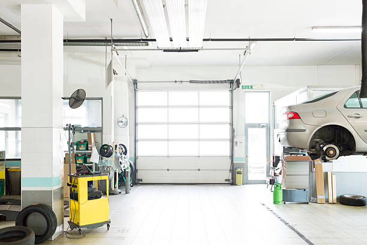

Pisgah Alabama
info@asapstatewideseptic.pro
Pisgah Alabama
info@asapstatewideseptic.pro

Get top-notch septic solutions in Pisgah Alabama from certified experts. We specialize in septic tank pumping, inspections, and repairs to keep your home’s system in optimal condition.
Click Here To Call Us (877) 848-1711When it comes to maintaining your septic system, you need a company you can trust to deliver reliable and high-quality services. At , we specialize in comprehensive septic services for both residential and commercial properties in Pisgah Alabama . Our team of certified professionals is committed to ensuring your septic system operates efficiently, protecting your property and the environment.
We offer a wide range of septic solutions, including septic tank pumping, repair, installation, and maintenance. Whether you need routine maintenance or emergency services, we are here to help. Our advanced tools and eco-friendly methods ensure that your septic system is always in top condition.
By choosing , you are choosing a trusted partner that understands the unique needs of Pisgah Alabama residents. We are proud to be your go-to septic experts, delivering fast, affordable, and reliable services. Our team is fully licensed and insured, ensuring the highest standards of safety and professionalism for every job.
Don’t wait for a septic emergency to disrupt your life—contact us today for expert septic services in Pisgah Alabama . Whether you need an inspection, repair, or installation, we have the knowledge and experience to get the job done right.
Residential & commercial septic service
Quality services at affordable prices
Immediate 24/ 7 emergency services


When it comes to septic tank installation in Pisgah Alabama trust the experts to ensure your system is installed professionally and efficiently. At septic service, we specialize in providing top-notch septic tank services tailored to your needs. Our experienced team uses state-of-the-art equipment to offer reliable septic system installations that comply with local regulations and ensure long-term functionality.
Septic tank installation is a crucial part of maintaining a healthy home or business environment. With years of experience in the industry, we understand the importance of a well-designed and properly installed septic system. Our team conducts thorough site assessments to determine the best location for your septic tank, ensuring optimal performance and minimizing potential issues.
We offer a wide range of septic tank sizes and systems suitable for residential and commercial properties across Pisgah Alabama . Whether you're building a new home or upgrading your existing septic system, we ensure the installation is handled with precision and care. Our skilled technicians take the time to explain your options, helping you make an informed decision.
At septic service, we prioritize customer satisfaction and strive to deliver prompt, professional septic tank installation services in Pisgah Alabama and surrounding areas. Contact us today for expert septic services that guarantee peace of mind.
Residential & commercial septic service
Quality services at affordable prices
Immediate 24/ 7 emergency services
Septic emergencies can arise unexpectedly, and quick response is crucial to minimizing impact on your business. At septic service, we provide emergency septic services for commercial properties ready to tackle urgent issues efficiently.
Our skilled professionals are available around the clock, equipped to handle emergencies like backups, leaks, and system failures. We pride ourselves on our rapid response times and effective solutions, protecting your property and operations. Trust septic service to ensure your septic system is back up and running in no time.

Regular inspections of septic systems for commercial buildings are vital for identifying issues before they escalate. Our septic system inspection services cater specifically to businesses, ensuring you maintain healthy and compliant sanitation systems.
Our comprehensive inspection services assess all critical system components, enabling us to provide you with a thorough report detailing your system's condition and any necessary upgrades or repairs. Rely on our expertise to help you prevent disruptions and uphold standards of hygiene and compliance.

As more businesses prioritize sustainability, effective sewage treatment systems have become essential. Our sewage treatment systems services focus on providing businesses with efficient, compliant, and environmentally friendly solutions that effectively manage wastewater.
We offer tailored designs and installations that suit your unique business requirements while complying with regulations. Opt for our professional services, and we will guide you in implementing a system that safeguards your business and the environment alike.
As a business owner, effective waste management is crucial to your operations. septic service specializes in sewage treatment systems designed to meet the unique requirements of businesses in Pisgah Alabama . Our systems are engineered to handle varying capacities and waste types while adhering to all local and federal regulations.
We work with you to assess your needs and design a sewage treatment system that guarantees efficiency and compliance. Our expertise spans industrial, commercial, and agricultural sectors, making us a trusted partner for any business requiring a reliable solution.
Choosing septic service for your sewage treatment needs means investing in technology and innovation. We are committed to providing systems that maximize performance while minimizing environmental impact.

At septic service, we understand that each septic situation is unique, which is why we offer specialized septic services tailored to meet diverse needs . From design to maintenance and emergency repairs, our team is equipped with the expertise needed to handle every challenge.
Our specialized services include unique solutions like septic tank location services, odor control strategies, and rural property pumping. We believe that every property deserves a septic solution that fits its unique characteristics and challenges.
With our commitment to customer service and quality, you can count on septic service to provide specialized septic services that are not just effective but also environmentally friendly, promoting sustainability in your area.
Finding the precise location of your septic tank is essential for effective maintenance and repairs. At septic service, we offer expert septic tank location services tailored to the specific needs of property owners . Our state-of-the-art techniques and equipment allow us to pinpoint tank locations accurately, even when they are hidden or buried under landscaping.
Knowing the exact location of your septic tank aids in regular maintenance and helps prevent unnecessary damages. We provide clear documentation of our findings, helping you manage and care for your septic system more effectively.
By choosing septic service, you are partnering with a knowledgeable team that prioritizes your satisfaction and peace of mind. We ensure the process is quick, efficient, and minimally disruptive to your property.

Unpleasant odors from your septic system can be more than just a nuisance; they can indicate underlying issues. At septic service, we specialize in septic tank odor control solutions designed to eliminate foul smells and address the core issues causing the problems.
Our team conducts thorough assessments to identify the source of odors, whether it's a build-up of solids, improper ventilation, or other issues. We provide practical solutions tailored to your specific situation, ensuring that odors are mitigated effectively.
Choosing septic service for odor control means selecting a partner that understands the importance of a clean and pleasant environment. We take pride in our customer service, working to ensure your home or business maintains a fresh atmosphere while safeguarding your septic system.

Aerobic septic systems can offer greater efficiency for properties with high water usage. Our installation and repair services focus on ensuring these systems operate at peak performance, allowing for effective treatment of wastewater.
When you choose us for aerobic septic system installation or repair, you gain access to skilled technicians trained in advanced septic technologies, committed to delivering exceptional service. Let us help you achieve a sustainable solution tailored to your property’s specific needs.

For properties with challenging soil conditions or high water tables, aerobic septic systems present an effective solution. At septic service, we specialize in the installation and repair of aerobic septic systems tailored to the unique needs of residents .
Our team guides you through the entire process, from system selection to installation and ongoing maintenance. Aerobic systems offer enhanced waste treatment, making them ideal for properties where traditional systems may fail to perform effectively.
When you choose us for your aerobic septic system needs, you receive a comprehensive service that focuses on compliance, efficiency, and sustainability. Our skilled technicians ensure that your system operates optimally, protecting both your property and the environment.
Years Experience
Expert Technicians
Satisfied Clients
Compleate Projects
At ASAP Statewide Septic, we understand that your septic system is crucial to the health and functionality of your home or business. Serving all cities in Pisgah Alabama we offer prompt, reliable, and expert septic services that ensure your system operates efficiently. Whether you need routine maintenance, septic repairs, or emergency services, we are your go-to solution for all things septic.
Our experienced team of licensed professionals is dedicated to providing top-quality services tailored to your specific needs. We specialize in thorough septic inspections, cleaning, repairs, and installations. By using the latest technology and best industry practices, we ensure that your septic system stays in peak condition year-round, helping you avoid costly repairs down the line.
Why waste time with unreliable service providers when ASAP Statewide Septic offers quick response times, competitive pricing, and unmatched customer care? Our commitment to excellence ensures that each job is done right the first time, giving you peace of mind knowing that your septic needs are in expert hands. We also pride ourselves on our transparency, providing clear, honest estimates and keeping you informed every step of the way.
Serving all cities in Pisgah Alabama ASAP Statewide Septic is here for all your septic service needs. Trust us for fast, efficient, and professional service whenever you need it. Choose ASAP Statewide Septic today for unmatched expertise and reliability.
In today's world, ensuring your home's waste management system operates efficiently is critical for a clean and healthy living environment. At septic service, we specialize in providing top-notch residential septic services . Our team of experienced professionals has the knowledge and tools to handle all aspects of septic system management, including installation, repair, maintenance, and inspection.
Investing in regular septic services not only guarantees the longevity of your system but also prevents potential health hazards associated with malfunctioning systems. From conducting thorough inspections to scheduling regular cleanings, our proactive approach helps homeowners avoid costly repairs. With our expertise in the latest technologies and techniques, you can rest assured your septic system will be in the best possible hands.
Customer satisfaction is our top priority. We pride ourselves on our transparent pricing, exceptional customer service, and commitment to eco-friendly practices. Choose septic service for your residential septic needs, and experience the peace of mind that comes with a dependable waste management system.
In today's world, ensuring your home has a properly functioning septic system is crucial for maintaining hygiene and protecting your health. At septic service, we specialize in comprehensive residential septic services tailored to meet your specific needs. With years of experience serving the Pisgah Alabama community, we understand the intricacies of local regulations and soil types, ensuring efficient and effective septic system solutions.
Our residential services include septic tank installation, repair, pumping, cleaning, and routine maintenance. We utilize advanced technology and proven methods to monitor and maintain your septic system, which can prolong its lifespan and prevent costly emergencies. Choosing us means opting for a reliable partner that prioritizes your home's sanitation and your peace of mind.
We pride ourselves on our commitment to customer satisfaction. Our professional team is equipped to handle emergencies, and we offer 24/7 service because we understand septic issues don't adhere to a schedule. Our transparent pricing and thorough inspections ensure that you fully understand your system's condition and the required services. Trust septic service for all your residential septic service needs in Pisgah Alabama .
Is your septic tank showing signs of trouble? Ignoring minor issues can lead to significant problems and costly repairs down the line. At septic service, we offer expert septic tank repair services and are dedicated to restoring your system to optimal performance levels.
Our experienced technicians are equipped to diagnose and resolve a variety of septic tank issues, including leaks, clogs, and unexpected backups. We use advanced tools and techniques to provide lasting solutions that safeguard your property and the environment. Our prompt and efficient service minimizes inconvenience, allowing you to get back to your routine with confidence in a well-functioning septic system.
Regular septic tank pumping is essential for preventing backups and maintaining system efficiency. At septic service, we provide thorough septic tank pumping services that help extend the life of your system. Our trained technicians follow a detailed pumping process that ensures every inch of your tank is effectively cleared of sludge and solid waste. We advise our customers on the appropriate pumping schedule based on their system usage and local guidelines. By choosing us, you're taking proactive steps toward a healthy and functioning septic system.
Regular septic tank pumping is essential for the longevity of your septic system. At septic service, we offer professional septic tank pumping services to keep your system functioning at its best. Over time, solids accumulate in your tank and require removal to prevent backups and potential overflows, which can lead to costly repairs and health hazards.
Our team uses advanced pumping equipment designed to efficiently remove solid waste and restore the tank to optimal conditions. We recommend a routine pumping schedule based on your household size and usage to maintain your system effectively. By choosing our septic tank pumping services, you help prevent issues before they arise, saving you time and money.
We pride ourselves on our quick response times and customer-focused approach. Our technicians arrive punctually and are committed to treating your property with respect and care. For superior septic tank pumping services in Pisgah Alabama septic service is your trusted partner.
Don't wait for a problem to arise; proactive septic tank cleaning and maintenance is key to long-term efficiency. At septic service, we offer thorough cleaning services that remove sludge and scum, ensuring that your septic tank operates efficiently. Regular maintenance not only prolongs the life of your system but also helps prevent costly repairs.
Our maintenance plan includes detailed inspections and cleaning, along with valuable tips on how to care for your septic system. We understand the local environment and can adjust our services to the specific needs of homes . By partnering with us, you benefit from expert advice and services designed to enhance your system’s performance.
Choosing septic service means relying on a team that is dedicated to your satisfaction. Our skilled professionals are trained to execute cleaning procedures with precision, and we ensure that all waste is disposed of properly and in line with environmental regulations.
Regular septic system inspections are crucial for ensuring your system operates efficiently and safely. At septic service, we provide comprehensive septic system inspections that identify potential issues before they escalate. Our certified inspectors assess the condition of your tank, lines, and drains, providing a thorough evaluation that allows you to make informed decisions regarding repairs or upgrades.
Our inspection process follows industry best practices and local regulations, ensuring that you receive an accurate and reliable assessment. We use advanced diagnostic equipment to identify problems that may not be visible, providing you with peace of mind that your system is in good working order.
When you choose our inspection services, you can trust that we prioritize quality and transparency. We thoroughly explain our findings and recommend solutions tailored to your needs. Our commitment to customer service in Pisgah Alabama ensures you feel confident in your septic system after our visit.
Damaged or blocked septic lines can lead to severe problems, including unsightly backups and potential health hazards. Our expert team provides efficient septic line repair services focusing on restoring functionality as quickly as possible. We can detect and resolve issues like leaks, blockages, and displaced lines with precision.
By opting for our septic line repair services, you gain access to advanced diagnostic tools, ensuring timely repairs and a thorough understanding of the problem at hand. Our skilled technicians are always ready to tackle any challenges you may face, with commitment to quality, value, and customer satisfaction.
If you’re experiencing septic system issues but can’t pinpoint the cause, our septic system troubleshooting services in Pisgah Alabama can help. Our team of experienced professionals knows how to diagnose complex problems through detailed examinations and assessments to get your system back on track.
We understand the nuances behind septic systems, which allows us to offer tailored solutions to resolve your troubles effectively. Our proactive approach ensures minimal disruption and optimal results. By choosing our troubleshooting services, you partner with a team that emphasizes transparency and communication throughout the process.
Installing a new septic system pump can improve efficiency and performance. At septic service, we specialize in septic system pump installation services that follow best practices and local regulations. Our skilled technicians assess your current system to recommend the right pump for your needs, ensuring the longevity and performance of your system. Our commitment to quality installations guarantees a seamless integration with your existing system. By choosing us, you are making a smart investment in the maintenance of your home’s waste management system.
Septic backup can be a nightmare for homeowners. At septic service, we provide specialized services focused on septic backup prevention and effective solutions . Our team is dedicated to educating homeowners on proper system usage and maintenance to avoid frustrating backups.
We offer comprehensive inspections to identify potential risks and provide tailored maintenance plans. In case of emergencies, our rapid response team can quickly address backups and resolve issues to prevent further damage. Ultimately, our commitment to excellence and customer satisfaction sets us apart as the leading provider of septic backup prevention solutions .
Preventing septic backups is essential for maintaining a clean and functional home environment. At septic service, we specialize in septic backup prevention and solutions that keep your system running smoothly. Our team provides thorough inspections and maintenance services designed to identify and mitigate potential backup risks.
We educate our clients on proper usage and maintenance practices, from what can and cannot be flushed or washed down the drain to the importance of regular pumping and inspections. By adopting a proactive approach, you can avoid costly and inconvenient backups.
When it comes to solutions, our team is outfitted with state-of-the-art technology to address any backup issues efficiently, should they arise. Trust septic service as your partner in septic maintenance and emergency responses .
Installing a commercial septic system requires expertise and precision. Our commercial septic system installation services cater to various business types, tailored specifically to meet the requirements of larger establishments. Our extensive experience ensures we navigate through regulations and codes efficiently.
When you choose us for your installation, you can expect comprehensive site evaluations, quality equipment, and experienced technicians dedicated to getting the job done right. Trust us to provide a sustainable and effective solution for your business's waste management needs.
Regular septic tank pumping is crucial for maintaining the health of your commercial septic system. At septic service, we provide efficient septic tank pumping services tailored for businesses in Pisgah Alabama . Our experienced technicians utilize advanced equipment to ensure a thorough pumping that minimizes business interruptions. We offer flexible scheduling options to accommodate your business hours, ensuring your operations remain smooth and hassle-free. Choose us for your commercial pumping needs, and keep your septic system functioning optimally.
For restaurants and food service businesses, proper grease trap maintenance is vital. At septic service, we specialize in grease trap and commercial waste removal services ensuring your establishment complies with local regulations.
Our team provides thorough cleaning and maintenance services, thus preventing clogs and backups that can lead to costly fines and damage. We understand the importance of minimal disruption to your operations, so we offer flexible scheduling options to meet your specific needs. Trust septic service as your partner in maintaining a clean and efficient waste management system for your food service business.
Designing a septic system that meets the specific needs of your business is a critical investment. At septic service, we offer professional septic system design and consultation services in Pisgah Alabama tailored to commercial properties.
Our team of experts collaborates with you to evaluate your waste management needs and environmental considerations. From initial assessments to designing systems that comply with local guidelines, we ensure your septic solution is efficient and reliable. Our commitment to quality service and customer satisfaction positions us as a leader in the septic industry.
Restaurants and hotels require reliable septic systems to ensure their operations run smoothly. At septic service, we specialize in septic system repair for restaurants and hotels in Pisgah Alabama tackling issues that could disrupt your business.
Our experienced technicians promptly identify and resolve septic issues using the best practices in the industry. We understand the urgency of these repairs and prioritize quick response times to avoid interruptions to your operations. With our expertise, septic service ensures your septic system remains a dependable asset for your business.
Large buildings require specialized septic systems built to handle increased waste volume. At septic service, we provide high-capacity septic systems designed for large buildings ensuring your waste management needs are met without compromising on efficiency or compliance.
Our team conducts comprehensive evaluations to determine the right system size and design tailored to your property’s requirements. We utilize advanced technologies and materials to deliver robust septic solutions that handle high volumes of waste seamlessly. Trust septic service for effective high-capacity septic systems that support your property's operational needs.
Navigating the complexities of septic system compliance can be daunting for business owners. Our services focus on ensuring that your commercial property meets all local health and safety regulations. We conduct thorough inspections and provide recommendations to bring your system up to standard.
We keep abreast of local codes and compliance requirements, ensuring you remain ahead of any regulations that might impact your business. Trust our expertise to help you maintain a compliant and functional septic system, safeguarding your investments.
Proper maintenance of your septic system is essential to ensure its longevity and avoid costly repairs. At septic service, we specialize in professional septic tank pumping and cleaning services for residential and commercial properties in Pisgah Alabama . Our expert team is committed to delivering top-notch services that keep your septic system running smoothly.
Septic tanks should be pumped every 3 to 5 years to prevent clogs and system malfunctions. Whether you need a one-time service or regular maintenance, we offer flexible scheduling to meet your needs. Our septic cleaning services include removing waste, inspecting your system for any issues, and providing a thorough cleaning to ensure proper functionality.
By choosing our septic tank pumping services, you are investing in the health and efficiency of your entire plumbing system. We utilize state-of-the-art equipment and eco-friendly solutions to minimize disruption to your property while delivering exceptional results. Our licensed and experienced team will handle all aspects of your septic maintenance, from pumping to cleaning, ensuring you receive a hassle-free service.
Don’t wait for a system failure to take action—call septic service today for reliable septic tank pumping and cleaning services in Pisgah Alabama . We're here to keep your septic system in excellent condition and avoid unnecessary emergencies.
Pisgah is a town in Jackson County, Alabama, United States, and is included in the Huntsville-Decatur Combined Statistical Area. It incorporated in 1947. As of the 2020 census, the population of the town was 681, down from 722 in 2010. Pisgah is located atop Sand Mountain.
State Wide Septic provides comprehensive septic services in Pisgah Alabama including installation, repair, pumping, and maintenance for residential and commercial systems.
Yes, State Wide Septic offers customizable maintenance plans for homeowners and businesses .
We provide septic services throughout all cities and towns offering reliable solutions statewide.
Yes, State Wide Septic specializes in installing new septic systems ensuring compliance with local regulations.
Immediately stop water usage and contact State Wide Septic for emergency services .
Yes, State Wide Septic specializes in diagnosing and repairing field line issues across Pisgah Alabama .
Common signs include slow drains, foul odors, pooling water, and backups. If you notice these issues call State Wide Septic for prompt service.
We recommend pumping your septic tank every 3-5 years, depending on household size and usage. Contact State Wide Septic for an assessment tailored to your needs in Pisgah Alabama .
Absolutely. State Wide Septic uses eco-friendly practices to ensure safe and sustainable waste management .
Yes, State Wide Septic has the expertise and equipment for large-scale residential or commercial projects .
Yes, State Wide Septic provides free, no-obligation estimates for all septic services .
Yes, State Wide Septic assists with permitting and ensures compliance with local Pisgah Alabama regulations.
Yes, our State Wide Septic team is fully licensed and certified to provide top-quality services in Pisgah Alabama .
Call or book online with State Wide Septic to schedule convenient septic maintenance anywhere in Pisgah Alabama .
Yes, State Wide Septic provides environmentally safe treatments for optimal system performance in Pisgah Alabama .
The cost varies based on the tank size and condition. Contact State Wide Septic for a competitive quote in Pisgah Alabama .
Yes, State Wide Septic provides specialized services for businesses including grease trap cleaning and large-scale system maintenance.
Yes, we offer thorough septic inspections for homebuyers to ensure the system is in good condition.
Backups can result from clogs, improper maintenance, or system overload. State Wide Septic can diagnose and resolve these issues .
Typically, it takes 1-2 hours. State Wide Septic ensures quick and thorough pumping .
With proper care, septic systems can last 20-30 years. State Wide Septic offers services to extend system life .
Yes, State Wide Septic offers 24/7 emergency septic services across Pisgah Alabama to address urgent issues like backups or system failures.
You can reach State Wide Septic by phone or through our website to schedule services anywhere in Pisgah Alabama .
Slow drains, gurgling sounds, and foul odors often indicate a full tank. Contact State Wide Septic for pumping services in Pisgah Alabama .
The size depends on household size and water usage. Contact State Wide Septic for expert recommendations.
Regular maintenance, avoiding non-biodegradable waste, and scheduling inspections with State Wide Septic can help prevent issues .
Yes, State Wide Septic offers efficient septic tank replacement services throughout Pisgah Alabama .
State Wide Septic ensures efficient and compliant replacements tailored to your needs .
Avoid flushing grease, wipes, and non-biodegradable items. Contact State Wide Septic for more tips in Pisgah Alabama .
Regular maintenance prevents costly repairs and extends system life. Schedule with State Wide Septic today.
"The team at ASAP State Wide Septic did a fantastic job fixing our septic tank. Their prompt and professional service was beyond expectations. We’ll definitely use them again in Pisgah Alabama ."
Profession
"ASAP State Wide Septic was a pleasure to work with! They were responsive, professional, and fixed our septic tank without delay. Great service in Pisgah Alabama !"
Profession
"We had an emergency with our septic system, and ASAP State Wide Septic responded immediately. Their service was efficient and affordable. Thanks for the great work in Pisgah Alabama !"
Profession
Pisgah AL septic service Pros
(877) 848-1711
info@asapstatewideseptic.pro
09.00 AM - 09.00 PM
09.00 AM - 12.00 PM